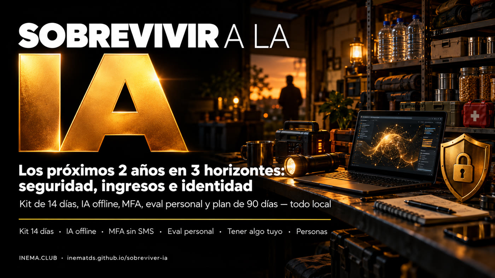

Tres horizontes de riesgo, un kit para cada uno: casa preparada, cuentas blindadas, trabajo medido y un plan de 90 días.

sobreviver-ia es un conjunto de herramientas simples, que corren en tu computadora, para atravesar los próximos dos años de IA con menos sobresaltos. Sirve para cualquier persona o familia: calcula la comida, el agua y el dinero de un kit de 14 días, instala una IA y la Wikipedia offline, muestra qué cuentas todavía dependen del SMS y mide, con tareas de tu propio trabajo, cuánto hace ya la IA por ti. Solo necesita Python 3 (y, si quieres la IA offline, espacio en disco). Nada usa clave de API.
El proyecto explicado en pocos minutos.
El riesgo no llega de una sola vez. En el corto plazo es de seguridad; en el mediano, de trabajo e ingresos; en el largo, de creencias e identidad. Cada horizonte tiene una parte del repositorio.
Los ataques a sistemas conectados a internet se vuelven más baratos y más comunes. Prepara la casa para algunos días sin los servicios de siempre y saca tus cuentas del SMS.
kit/ comida, agua, dinerooffline/ IA y Wikipedia sin internetseguranca/ MFA y auditoríaLos puestos de entrada en las funciones más expuestas ya se están reduciendo. Usa IA en todo, mide qué parte de tu trabajo hace, ten algo tuyo, construye distribución y acércate al mundo físico.
eval/ tu eval personal + marcadorplano/ semanas 1–8Si tú eres tu cargo, cada avance de la IA duele como una amenaza. Defínete por tu carácter, revisa tus creencias, mantén la mente abierta e invierte en personas.
plano/ semanas 9–13Cuatro hechos verificados muestran que los tres horizontes no son teoría.
Cuánto quedó por debajo, en relación con las funciones menos expuestas. Cada barra es una versión del estudio, no un año: el número es acumulado.
| Versión del estudio | Brecha acumulada |
|---|---|
| 1.ª versión | −13% |
| 2.ª versión | −15% |
| Actualización ago/2026 | −19% |
El efecto llega por la contratación, no por despidos masivos.
Lectura práctica: el primer peldaño de la carrera se está estrechando, y los sistemas físicos dependen de contraseñas digitales. Las dos cosas piden prepararse ahora.
Fuentes: Stanford Digital Economy Lab, "Canaries in the Coal Mine" (actualización ago/2026); Reuters (Francia, 11/10/2026; otras fuentes hablan de 500–700 tiendas); informe público del incidente de julio de 2026; Dario Amodei, "Machines of Loving Grace" (2024).
Base: 2.000 kcal por persona por día y 1,5 a 2 litros de agua para beber por persona por día, durante 14 días. El efectivo es un mes de tu gasto. Cambia los números.
Miles de kcal · 2.000 kcal/persona/día
| Personas | kcal (14 días) |
|---|---|
| 1 | 28.000 |
| 2 | 56.000 |
| 3 | 84.000 |
| 4 | 112.000 |
| 5 | 140.000 |
Litros · rango de 1,5 L (marca) a 2 L (barra) por persona/día
| Personas | Litros (14 días) |
|---|---|
| 1 | 21–28 |
| 2 | 42–56 |
| 3 | 63–84 |
| 4 | 84–112 |
| 5 | 105–140 |
Todo corre en tu computadora. El orden sugerido:
Solo el primero es obligatorio.
Para las herramientas de kit, auditoría y eval. Sin bibliotecas extra (matplotlib es opcional, solo para el PNG del marcador).
git clone https://github.com/inematds/sobreviver-ia cd sobreviver-ia
Para la IA offline: 2 a 5 GB del modelo + de 2,5 GB (Wikipedia pt "mini") a 110 GB (en "maxi"). El script muestra el total antes.
df -h ~ # cuánto queda libre
Para correr el eval en un modelo local. Para modelos en la nube, usa Claude Code, Codex o el chat al que ya estás suscrito.
ollama list # ¿ya lo tienes?
Comandos reales, para copiar. Ejecútalos desde la carpeta del repositorio.
Calorías, litros de agua, bidones, efectivo y la lista de compras de no perecederos. Con --markdown sale una lista de verificación lista para imprimir. La lista completa (primeros auxilios, extintor, linterna, radio, power bank) está en kit/checklist-casa.md (en portugués). Las herramientas muestran la salida en portugués.
python3 kit/calcula_kit.py --pessoas 2 --dias 14 --gasto-mensal 4500 # Calorías: 56.000 kcal · Agua: 42 a 56 litros (~12 bidones de 5 L) · Dinero: R$ 4.500 python3 kit/calcula_kit.py --pessoas 4 --markdown > meu-kit.md
El modo predeterminado es dry-run: muestra lo que haría y cuánto ocupa, sin descargar nada. Elige el modelo (llama3.2:3b, qwen2.5:7b…), los idiomas y el tipo de Wikipedia: mini (resumen de los artículos), nopic (texto completo sin fotos) o maxi (con fotos).
bash offline/instala-offline.sh --modelo qwen2.5:7b --wiki pt,en --tipo nopic # [1] Ollama + modelo qwen2.5:7b (~4.7 GB) # [2] Kiwix + Wikipedia pt/nopic ~9 GB, en/nopic ~55 GB # Espacio total aproximado: ~68.7 GB bash offline/instala-offline.sh --modelo qwen2.5:7b --wiki pt --tipo nopic --instalar kiwix-serve --port 8088 ~/offline/wikipedia_pt_all_nopic_*.zim # → http://localhost:8088
Windows: instala Ollama con el instalador de ollama.com/download/windows (o winget install Ollama.Ollama) y ejecuta ollama pull llama3.2:3b en el Símbolo del sistema. Instala Kiwix Desktop desde kiwix.org/applications y descarga el archivo wikipedia_pt_all_nopic_…zim de download.kiwix.org/zim/wikipedia; abre el .zim en Kiwix.
Crea la planilla de cuentas (solo el nombre, nunca la contraseña), marca el método de cada una (senha, sms, email, app, chave) y recibe la lista de lo que conviene migrar primero. El paso a paso de cada cuenta está en seguranca/checklist-mfa.md (en portugués).
python3 seguranca/auditoria_contas.py --modelo contas.csv # planilla modelo python3 seguranca/auditoria_contas.py --interativo contas.csv # o pregunta cuenta por cuenta python3 seguranca/auditoria_contas.py contas.csv --saida relatorio.md # Cuentas: 7 · Con app autenticadora o passkey: 1 (14%) · Todavía en SMS: 4 # 1 | Correo principal | email | SMS (débil) | cambiar SMS por app autenticadora o passkey; guardar códigos…
Un eval es un conjunto de 10 a 15 tareas reales de tu día, siempre las mismas, con los archivos de contexto y un criterio de lo que cuenta como "hecho". Cada tarea es una carpeta: eval/tarefas/NN-nome/ con tarefa.md, contexto/ y criterio.md. Ya vienen 3 ejemplos: resumir una reunión, ordenar los gastos del mes y responder a un cliente molesto.
eval/tarefas/ ├── 01-resumir-reuniao/ tarefa.md · contexto/reuniao.txt · criterio.md ├── 02-planilha-gastos/ tarefa.md · contexto/extrato.csv · criterio.md └── 03-email-cliente/ tarefa.md · contexto/email.txt, politica.md · criterio.md
Por defecto, el script genera un paquete para que lo pegues en Claude Code, en Codex o en el chat al que ya estás suscrito. Con --ollama corre directo en un modelo local. Nunca llama a una API paga y rechaza direcciones que no sean de tu máquina.
python3 eval/rodar.py --modelo claude-novo # genera eval/saida/<fecha>-claude-novo/pacote.md python3 eval/rodar.py --ollama qwen2.5:7b # corre en Ollama local (localhost:11434) # después: lee cada respuesta con criterio.md y pon la nota (0, 0,5 o 1) en notas.csv
Cada ronda se convierte en una línea de eval/placar.csv. El gráfico muestra la evolución del porcentaje de tu trabajo que la IA ya hace. Solo tú conoces ese número, porque sale de tus tareas.
python3 eval/placar.py registrar eval/saida/2026-10-19-qwen2.5-7b/notas.csv python3 eval/placar.py ver python3 eval/placar.py grafico # eval/placar.svg (+ .png si tienes matplotlib)
plano/plano-90-dias.md (en portugués) tiene una semana 0 para el corto plazo y 13 semanas con ejercicios: tener algo tuyo, construir distribución, acercarte al mundo físico, identidad por carácter, revisión de creencias, mente abierta y personas. El día 90, corre el eval de nuevo y compara.
python3 -m pytest -q # 22 pruebas de las herramientas
Resumen de plano/plano-90-dias.md (en portugués). No es una recomendación financiera; ajústalo a tu momento.